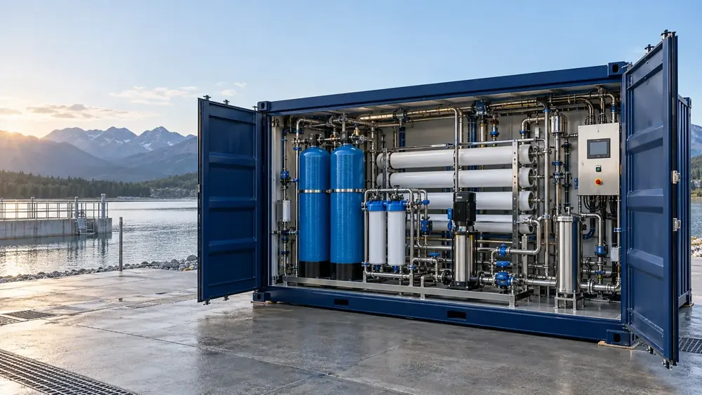
Stații de tratare a apei
Stații complete, inclusiv containerizate, dimensionate după analiza apei și debitul real: filtrare, deferizare, demanganizare, dedurizare.
Analizăm, proiectăm, montăm și întreținem stații de tratare pentru apă de proces, apă potabilă și ape uzate – pentru fabrici, municipalități, sănătate și HoReCa.
De la stații de tratare containerizate pentru fabrici și localități până la un filtru pentru un singur utilaj.

Stații complete, inclusiv containerizate, dimensionate după analiza apei și debitul real: filtrare, deferizare, demanganizare, dedurizare.
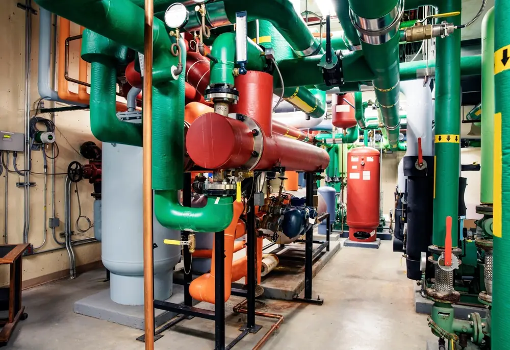
Dedurizatoare duplex și cu coloane în paralel, filtre automate multimedia, cu cărbune activ sau metalice cu pat de nisip, pentru funcționare continuă.
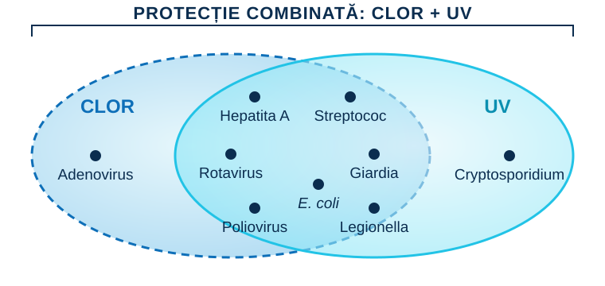
Stații de clorinare automate, sterilizatoare UV și generatoare de ozon, cu pompe dozatoare care controlează pH-ul, clorul liber și potențialul redox.
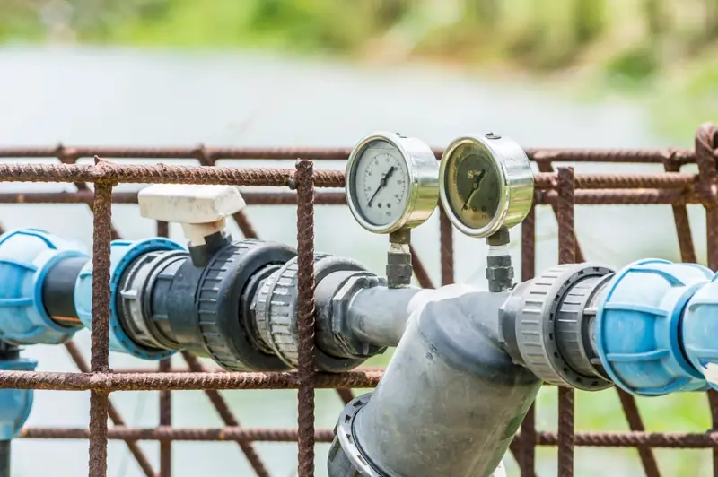
Grupuri de pompare cu turație variabilă, pompe pentru procese și rețele, contoare Woltmann cu generator de impulsuri pentru debite mari.
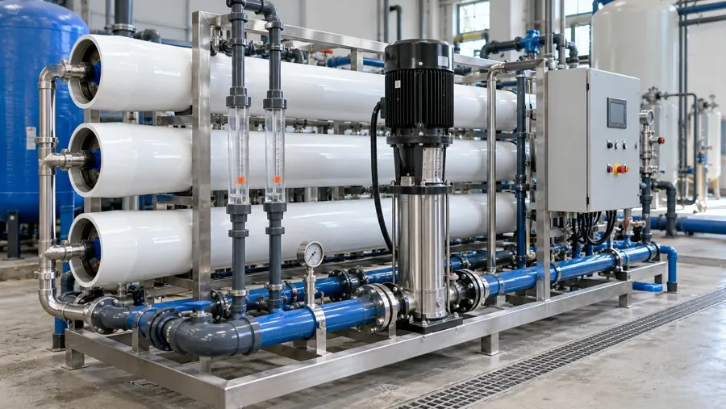
Apă de înaltă puritate pentru industria alimentară și farmaceutică, laboratoare, cazane și generatoare de abur.
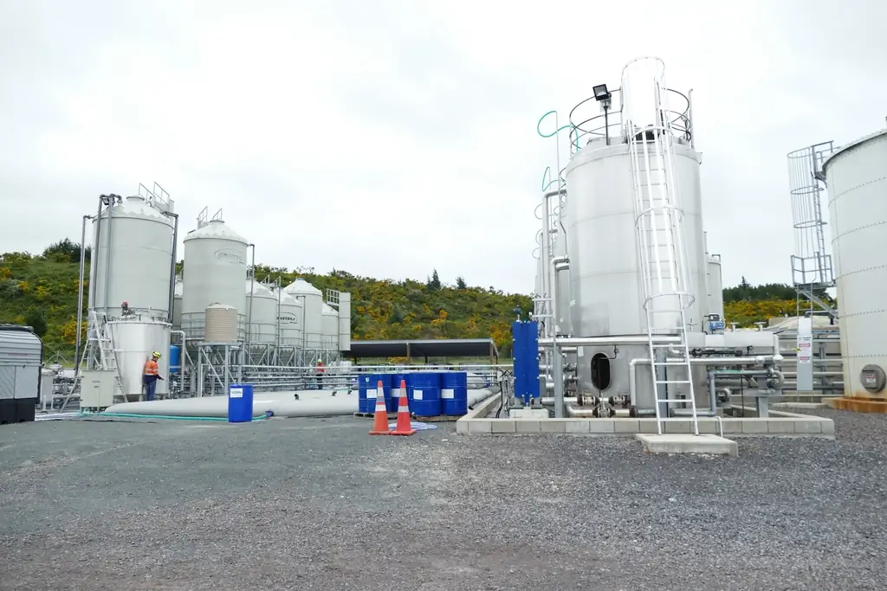
Decantoare lamelare, grupuri de evacuare și pompe pentru ape uzate, pentru reutilizarea apei sau evacuarea ei în siguranță.
Venim la fața locului cu laboratorul mobil și analizăm apa din rețea, din foraje sau din proces. Soluția și oferta tehnică se bazează pe rezultate, așa că nu plătiți pentru echipamente supradimensionate.
Află cum funcționează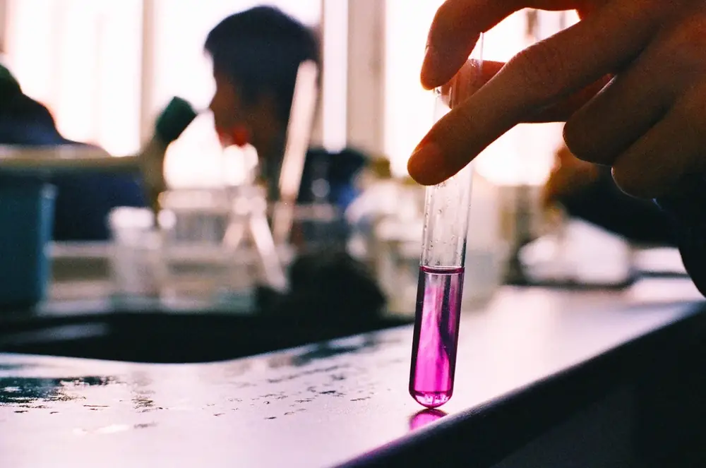
Recoltăm probe la fața locului și stabilim parametrii care trebuie corectați.
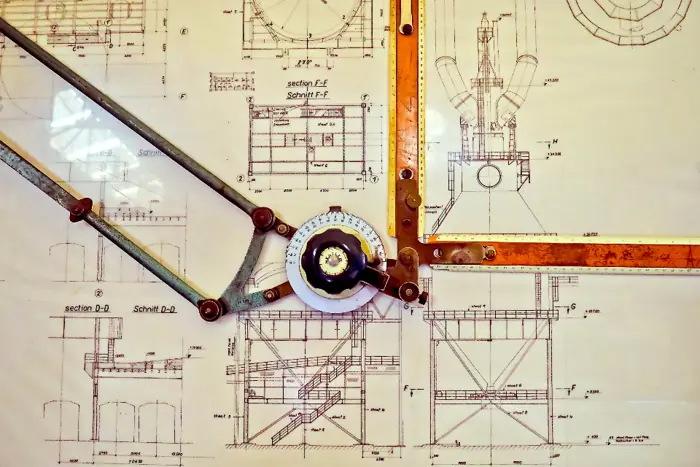
Dimensionăm soluția după rezultate, debit și cerințele procesului, apoi primiți oferta tehnică.
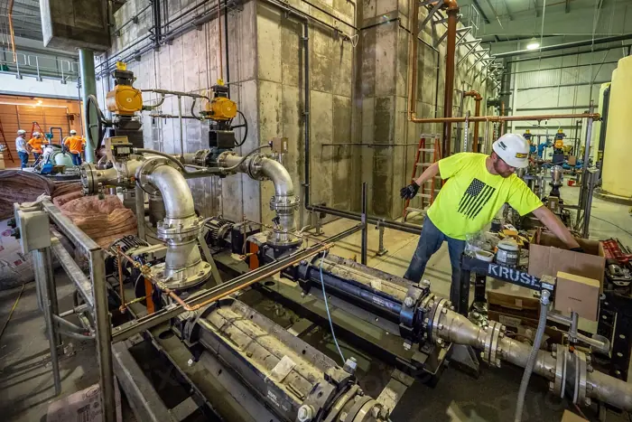
Montaj și punere în funcțiune, cu tehnicieni bine pregătiți și experiență în lucrări de anvergură.
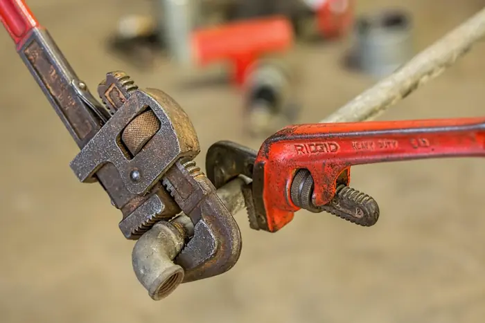
Suport tehnic direct, service în garanție și post-garanție, consumabile și piese din stoc.
Fiecare industrie are alte cerințe pentru apă. Le cunoaștem din peste 24 de ani de proiecte.
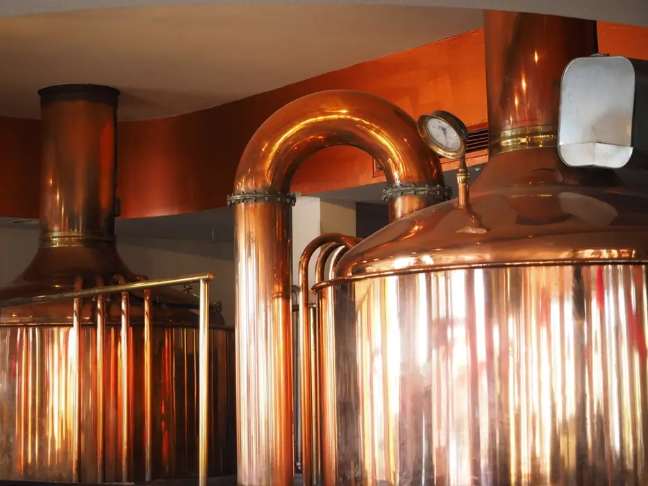
Apă de proces pentru fabrici de bere, îmbuteliere, lactate, panificație și distilerii, cu parametri constanți care nu modifică gustul produsului.
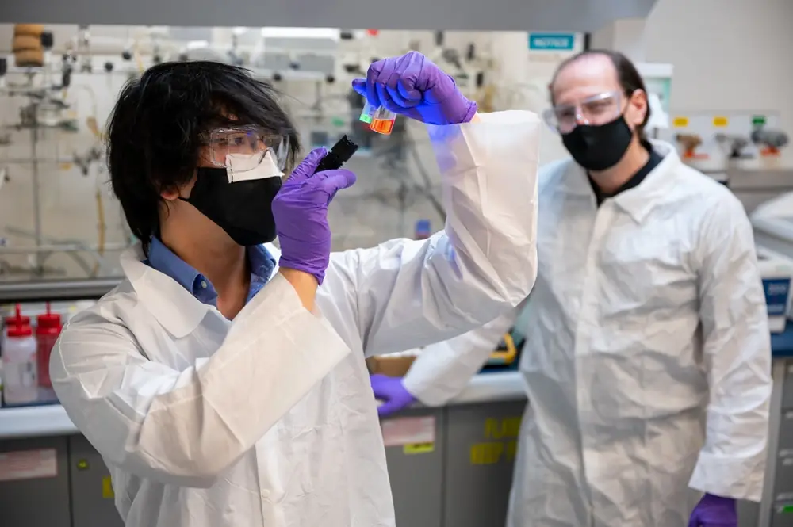
Apă purificată pentru spitale, centre de dializă, cabinete și laboratoare, unde puritatea este obligatorie.
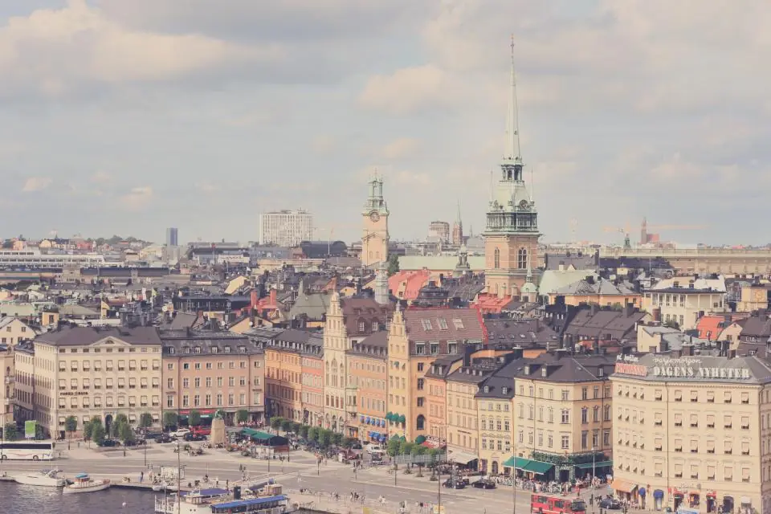
Stații de tratare și clorinare pentru apa potabilă a localităților, conforme cu valorile legale.
Apă dedurizată, demineralizată sau deionizată care previne depunerile, deteriorarea echipamentelor scumpe și opririle neplanificate.
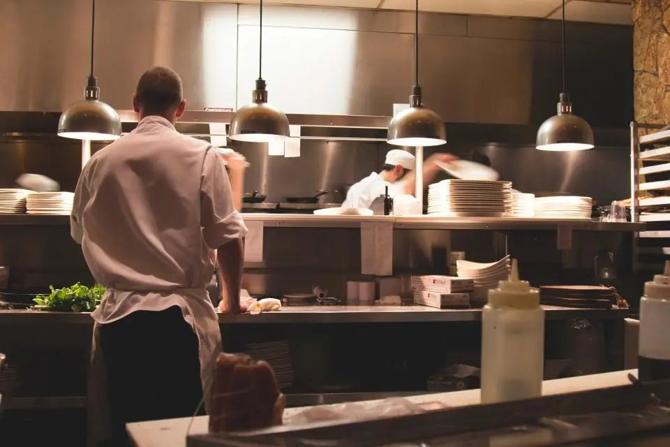
Hoteluri, pensiuni, restaurante, spălătorii și piscine: apă bună pentru oaspeți și echipamente protejate de calcar.
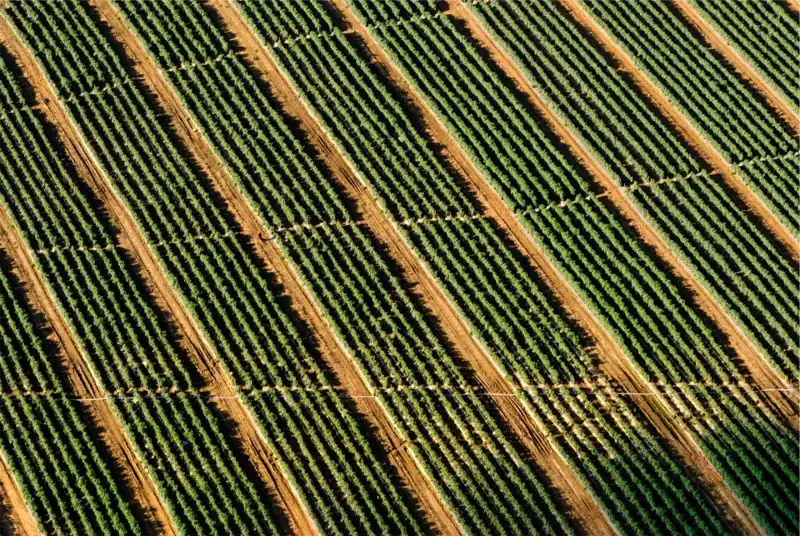
Filtrare pentru irigații, ferme, sere și crescătorii de pește.
Lucrăm și pentru case și vile: apă din fântână sau foraj, dedurizare, osmoză inversă la robinet. Începeți cu o analiză a apei.
Credem că apa curată este o resursă de neprețuit. De peste 24 de ani dezvoltăm soluții de tratare și epurare a apei cu tehnologii care respectă mediul înconjurător, pentru municipalități, companii industriale, afaceri și familii.
Industrializarea și riscul de contaminare chimică și biologică reduc continuu volumul de apă curată. Scopul nostru este să protejăm această resursă și pentru generațiile viitoare, prin soluții complete, de lungă durată și sustenabile, bazate pe integritate, inovație și profesionalism.
Oferim echipamente de filtrare pentru apă potabilă și uzată și echipamente pentru apă rece, caldă și carbogazoasă pentru orice debit, dimensionate exact după nevoia dumneavoastră.
Consultanță, proiectare, execuție, montaj și întreținere, cu experiență în lucrări de anvergură.
Producători din SUA, Franța, Italia, Israel, Suedia și Germania. Apa tratată se încadrează în valorile legale naționale și europene.
Vorbiți direct cu serviciul tehnic, fără intermediari. Echipamentele defecte se înlocuiesc din stoc sau la comandă în cel mult 3 zile.
Produse și servicii cu fiabilitate ridicată, plus service în garanție și post-garanție.
Descrieți aplicația, sursa apei și debitul necesar. Revenim cu o recomandare tehnică și o ofertă. Pentru o analiză la fața locului, sunați-ne direct.